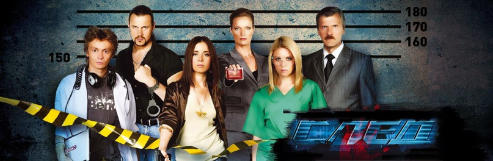

CЛЕД
«След» — российский криминальный телесериал, рассказывающий о сотрудниках вымышленной спецслужбы — Федеральной экспертной службы (ФЭС), созданной в Москве в составе МВД России для борьбы с преступностью.
Транслировался на «Первом канале» с 3 сентября 2007 по 25 августа 2011 года. С 5 сентября 2011 года по настоящее время премьерные серии многосерийного фильма транслируются на «Пятом канале».
ИСТОРИЯ СОЗДАНИЯ ФЭС
Возникновение Федеральной экспертной службы (ФЭС) в сериале «След» связано с идеей, предложенной Русланом Султановичем Султановым в 2007 году. Эта идея была создана для поимки маньяка «Органиста», который терроризировал город. Генерал Султанов поддержал эту инициативу, став куратором новой службы.
Полковник Галина Рогозина была назначена главой ФЭС. Она получила возможность самостоятельно выбрать сотрудников, включая заместителя Николая Круглова и руководителя компьютерного отдела Ивана Тихонова.
С течением времени состав ФЭС менялся, и к первоначальной шестёрке сотрудников добавлялись новые люди. Деятельность ФЭС отражалась в СМИ, и команда участвовала в различных расследованиях сложных преступлений.